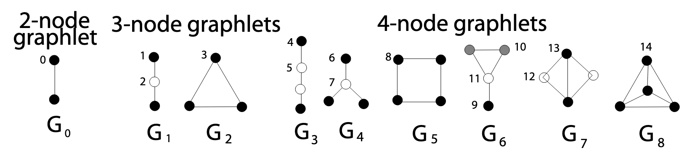
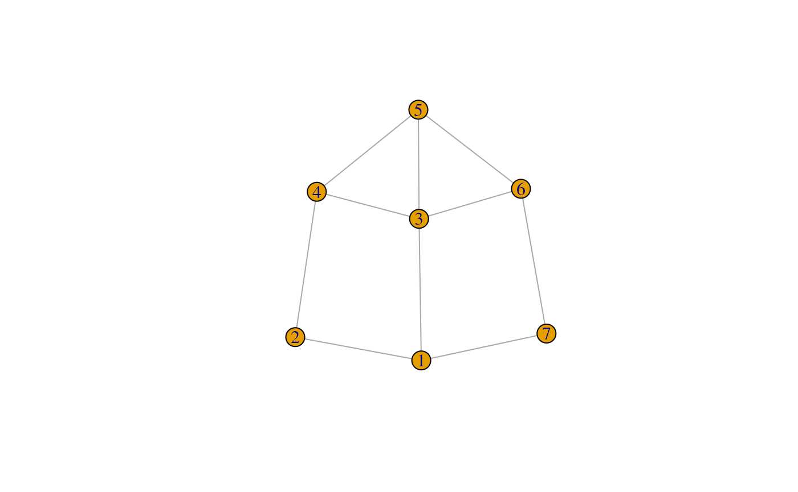
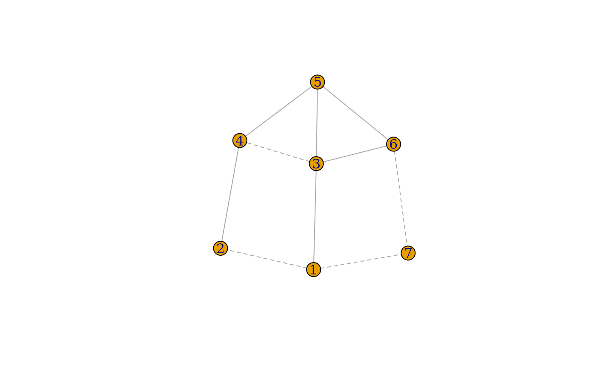
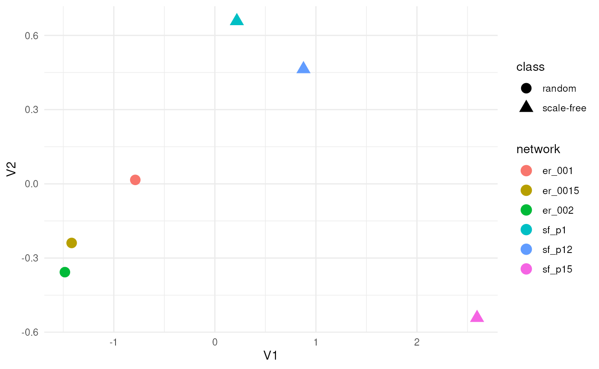

Introduction of graphlets and orbits
Graphlets are small, connected, non-isomorphic induced subgraphs of a larger network. For graphlets consisting of 2–4 nodes, there are eight distinct graphlets and fifteen corresponding automorphism orbits. Importantly, incorporating orbit information is critically useful, rather than using graphlet counts alone, as demonstrated by Apratim Das et al.
This concept can be naturally extended to signed and directed networks. The current version of RSNet supports graphlet orbit counting for both unsigned and signed undirected networks.
Here we use black lines to represent positive relationships and red lines for negative relationships. Notably, the number of unsigned graphlets of size up to four and their associated orbits is equivalent to the number of signed graphlets of size up to three and their corresponding orbits.


Construct graphlet degree vector matrix (GDVM)
Since there are eight graphlets and fifteen automorphism orbits for 2–4-node graphlets, the local structural characteristics of a node can be represented by a Graphlet Degree Vector (GDV) of length 15, where denotes the frequency with which node touches orbit . Therefore,the entire network can be represented as an matrix, where is the number of nodes in the network. This matrix is referred to as the Graphlet Degree Vector Matrix (GDVM).
Example of an unsigned network
Here, we use a dummy unsigned network to illustrate the concepts of the Graphlet Degree Vector (GDV) and the Graphlet Degree Vector Matrix (GDVM).
Given an igraph object, the function
gdvm_gcm() computes the GDV for each node, producing a GDVM
where rows correspond to nodes and columns represent orbit counts. The
level parameter can take values “4” or “5”, where “4” specifies that the
GDV is computed using 2–4-node graphlets.
A key consideration is the redundant_orbit parameter.
For demonstration purposes, we set it to TRUE in this
example; however, it is generally recommended to set it to
FALSE to exclude redundant orbit counts. Theoretical
analyses have shown that certain orbit counts can be derived from
others, classifying them as redundant orbits. Specifically, there are 11
non-redundant orbits among the 4-node graphlets and 56 non-redundant
orbits among the 5-node graphlets. Including redundant orbits may
introduce noise, as demonstrated by Yaveroğlu, Ömer Nebil,
et al.
For node 1 in this dummy network, the degree is 3,
corresponding to three counts in orbit
.
It also has five counts in orbit
,
corresponding to the subgraphs 1–3–5, 1–3–4, 1–3–6, 1–2–4, and 1–7–6.
Additionally, node 1has three counts in orbit
,
represented by the subgraphs 2–1–7, 2–1–6, and 7–1–3. The counts across
all fifteen orbits associated with node 1 are recorded in
the first row of the GDVM.
Dummy network
ig <- igraph::graph(edges = c(1,2, 1,3, 1,7, 2,4, 3,4, 3,5, 3,6, 4,5, 5,6, 6,7), directed = FALSE)
plot(ig)
Graphlet degree vector matrix (GDVM)
suppressWarnings(
gdvm_gcm(ig,
level = "4",
redundant_orbit = TRUE,
include_gcm = FALSE
)
) %>%
as.data.frame() %>%
magrittr::set_rownames(seq(1:vcount(ig))) %>%
DT::datatable(.)Example of a signed network
The concept of the Graphlet Degree Vector (GDV) and and the corresponding Graphlet Degree Vector Matrix (GDVM) can be naturally extended to signed networks. However, this extension is computationally more demanding, and currently no R packages provide functionality for constructing GDVMs for signed networks. A brute-force enumeration approach has computational complexity exceeding , where is the network size.
RSNet overcomes this limitation by integrating state-of-the-art graphlet counting algorithms with parallel computing, enabling efficient construction of signed GDVMs in , where is the average degree, resulting near-constant time complexity for sparse networks.
The function signed_gdv_gcm() takes an
igraph object as input and computes the GDV of each node
for graphlets of up to three nodes. Notably, in unsigned networks, the
number of graphlets of size up to four and the number of associated
orbits are equivalent to those of signed networks with graphlets of size
up to three.
Similarly, for demonstration purposes, we set the
redundant_orbit parameter to TRUE. There are
11 non-redundant orbits among the 3-node signed graphlets, which are
equivalent to those in the 4-node unsigned graphlets.
Dummy network
signed_ig <- igraph::graph(edges = c(1,2, 1,3, 1,7, 2,4, 3,4, 3,5, 3,6, 4,5, 5,6, 6,7), directed = FALSE)
E(signed_ig)$sign <- c(-1,1,-1,1,-1,1,1,1,1,-1)
E(signed_ig)$lty <- ifelse(E(signed_ig)$sign == -1, "dashed", "solid")
plot(signed_ig, edge.lty = E(signed_ig)$lty)
Graphlet degree vector matrix (GDVM)
suppressWarnings(
signed_gdvm_gcm(signed_ig,
n_cores = 1,
redundant = TRUE,
include_gcm = FALSE
)
) %>%
as.data.frame() %>%
magrittr::set_rownames(seq(1:vcount(signed_ig))) %>%
DT::datatable(.)Graphlet degree vector distance between vertices
Once the Graphlet Degree Vector Matrix (GDVM) is computed, the Graphlet Degree Vector (GDV) distance between two nodes is obtained by calculating the distance between their corresponding rows in the GDVM. The detailed formulation of the GDV distance is described by Milenković, Tijana, et al. Note that the GDV distance ranges from 0 to 1.
The function gdv_distance() takes two GDVs as input and
computes the GDV distance between the corresponding nodes. The function
intra_gdv_distance() takes a single GDVM as input and
computes the pairwise GDV distances between all nodes within a network.
In contrast, the function paired_gdv_distance() accepts two
paired GDVMs as input and computes the distance between corresponding
nodes across the two networks.
For demonstration purposes, we illustrate how to compute the GDV
distance between nodes 1 and 3 in the unsigned
dummy network.
## Compute the unsigned GDVM
gdvm <- suppressWarnings(
gdvm_gcm(ig,
level = "4",
redundant_orbit = TRUE,
include_gcm = FALSE
)
)
## Compute the GDV distance between node 1 and node 3
dist_13 <- gdv_distance(gdvm[1,], gdvm[2,])
print(paste("The GDV distance between node 1 and 3 is :", round(dist_13, 4)))## [1] "The GDV distance between node 1 and 3 is : 0.1788"Graphlet correlation matrix (GCM)
The Graphlet Correlation Matrix (GCM) is another key application of the Graphlet Degree Vector Matrix (GDVM).Given an GDVM, the GCM is constructed by computing the pairwise Spearman correlations between the columns of the GDVM. This produces an matrix that captures the correlations between different orbits. The GCM is recognized as a state-of-the-art measure for quantifying topological distance between networks.
The GCM can also be interpreted as a network embedding framework, encoding a network of arbitrary size into an matrix with entries ranging between –1 and 1. This representation enables the comparison of networks of different sizes on a common scale. Consequently, for any two networks and , their distance is defined by taking he Euclidean distance of the upper triangle values of and . More details can be found in the work of Yaveroğlu et al.
The GCM can be computed using the function gdvm_gcm()
for unsigned networks and signed_gdv_gcm()
for signed networks, by setting the argument
include_gcm = TRUE.
The GCM is computed using the function gdvm_gcm() for
unsighed network and signed_gdv_gcm() for signed network,
respectively, by setting the argument include_gcm to be
TRUE.
In the following example, we demonstrate the use of GCM to quantify topological distances both within and across network models by generating three random networks using the Erdős–Rényi (ER) model and three scale-free networks using the Barabási–Albert (BA) model with varying parameters.
We compare (i) network-level distances among networks within the same model class but with different parameters (e.g., ER networks with different edge densities), and (ii) distances between networks from different model classes (e.g., ER versus BA networks). In total, six networks are generated, and all pairwise GCM-based Euclidean distances are computed, followed by multidimensional scaling (MDS) for visualization. We observe that GCM-based distances effectively separate networks both across different model classes and within the same class under varying parameters. Notably, distances between networks from different classes are substantially larger than those between networks within the same class, highlighting the discriminative power of the GCM.
set.seed(66)
## Create 3 random networks with n = 100 with edge_density = 0.01, 0.015, 0.02
N <- c(100,100,100)
e_probs <- c(0.01, 0.015, 0.02)
er_networks <- mapply(function(n, p) igraph::sample_gnp(n, p, directed = FALSE), N, e_probs, SIMPLIFY = FALSE)
## Create 3 scale-free networks with n = 100 with power = 1, 1.2, 1.5
N <- c(100,100,100)
powers <- c(1, 1.2, 1.5)
sf_networks <- mapply(function(n,power) igraph::sample_pa(n, power, directed = FALSE), N, powers, SIMPLIFY = FALSE)
## Compute the GCMs of each networks and compute their pair-wise distance
## igraph object -> GCM -> upper_triangle(GCM) <- rbind each upper_triangle -> pair-wise row distance
er_GCM_upper_tri_mat <- lapply(er_networks, function(er_net){return(gdvm_gcm(er_net,include_gcm = TRUE)$gcm)}) %>%
lapply(., function(GCM){return(GCM[upper.tri(GCM)])}) %>%
do.call(rbind,.) %>%
{rownames(.) <- c("er_001", "er_0015", "er_002"); .}
sf_GCM_upper_tri_mat <- lapply(sf_networks, function(sf_net){return(gdvm_gcm(sf_net, include_gcm = TRUE)$gcm)}) %>%
lapply(., function(GCM){return(GCM[upper.tri(GCM)])}) %>%
do.call(rbind,.) %>%
{rownames(.) <- c("sf_p1", "sf_p12", "sf_p15"); .}
## row i = upper_triangle(GCM) of network i
GCM_upper_tri_mat <- rbind(er_GCM_upper_tri_mat, sf_GCM_upper_tri_mat)
## MDS clustering
mds <- GCM_upper_tri_mat %>%
proxy::dist(., method = "Euclidean", use = "pairwise.complete.obs") %>%
cmdscale(., k = 2) %>%
as.data.frame() %>%
tibble::rownames_to_column(var = "network") %>%
dplyr::mutate(class = case_when(
startsWith(network, "er") ~ "random",
startsWith(network, "sf") ~ "scale-free"
))
# Visualization
ggplot(mds, aes(x = V1, y = V2, color = network, shape=class)) +
geom_point(size = 4) +
theme_minimal()